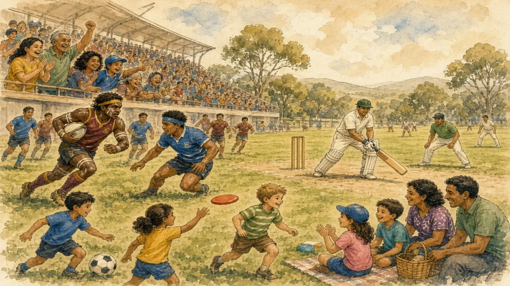

Rugby, cricket, Australian rules, netball and sevens: sport matters hugely in Oceania — and the Pacific Islands punch far above their weight.
Oceania · Sport & identity · Lesson 5 of 7
🌍 World map · ← Around the World: Oceania · 🌱 Easier version (A2) · ← Laid-Back or Lazy? Work, Fairness and “She'll Be Right” · Paradise Under Pressure: Life on a Pacific Island →

Each new word is hidden in a sentence. Read it aloud and say what you think the bold word means from the rest of the sentence — then reveal it and see how close you were.
Read each part. After it, there's a quick comprehension check (try the questions from memory first), then one thing to discuss.
Sport is a major part of public life in both countries, but different games matter in different places. Cricket is popular across Australia and is played at every level; Australian rules football, which was invented in Melbourne in the late 1850s, dominates in Victoria and South Australia; rugby league is strong in Sydney and Queensland; and rugby union is the national passion in New Zealand. Netball and football are widely played by women and girls, and in the last twenty years women's sport has grown quickly in both countries. Not everyone is a surfer: most people live in cities, and surfing is one activity among many. What is true is that clubs, schools and volunteers make it easy for children to take part, and sport is a major social activity.
1. Which sport was invented in Melbourne?
2. Is surfing the main sport for most people?
1. Australian rules football.
2. No. It is one of many activities.
The Pacific Islands produce an unusually large share of professional rugby players. Fiji, with fewer than a million people, won the Olympic gold medal in men's rugby sevens in 2016, its first Olympic medal of any kind, and again in 2021. Samoa and Tonga, which have populations of only a few hundred thousand and about a hundred thousand, regularly beat much larger countries, and many players for the All Blacks and the Wallabies have Pacific Islander roots. The reasons include a strong tradition of physical, team-based games, church and village communities that support young players, and migration, since many islanders move to New Zealand and Australia while they are still children. However, there are concerns too: young players have often been recruited early, and some have been exploited, so the islands' unions are asking for fairer arrangements.
1. What did Fiji win in 2016?
2. Why do the islands produce so much talent?
1. The Olympic gold medal in men's rugby sevens, its first Olympic medal.
2. Because of a strong team-sport tradition, community support and migration.
Sport has also been a stage for Indigenous pride and for debate. At the Sydney Olympics in 2000, the Aboriginal runner Cathy Freeman lit the Olympic flame and then won gold in the 400 metres, while the nation watched. The All Blacks' haka, performed before each match, has sometimes been discussed as a tribute to Māori culture and sometimes as a commercial ritual. The Black Ferns, New Zealand's women's rugby team, have won the Women's Rugby World Cup several times. Meanwhile, Australian and New Zealand teams have long played against each other with a friendly rivalry, often beginning conversations with jokes. When sport was changing the way the countries saw themselves, many fans were watching, shouting and arguing, but the real change was happening in the clubs and parks.
1. What did Cathy Freeman do in 2000?
2. Who are the Black Ferns?
1. She lit the Olympic flame and won the 400 metres.
2. New Zealand's women's rugby team.
A stereotype and the reality rarely match. This lesson's grammar gives you the structure to describe the difference.
Complete each sentence about this topic.
1. The crowd the anthem when the players ran onto the field. (sing — continuous)
2. While the match on, it started to rain. (go — continuous)
3. She down the track when she suddenly fell. (run — continuous)
1. was singing
2. was going
3. was running
1. The team the ball when the whistle blew. (pass — continuous)
2. When Fiji gold in 2016, the whole country celebrated. (win — past simple)
3. Fans loudly while the players warmed up. (cheer — continuous)
1. was passing
2. won
3. were cheering
Hold on to this — you'll need it in the Speak tab.
The image of a country of surfers and sports fans is both flattering and limiting. It suggests that sport comes naturally, when in fact it is the result of schools, clubs, volunteers and money. It also hides the people for whom sport has been difficult, such as Indigenous athletes who faced racism, and women who were once denied funding or air time. Understanding sport in the region means looking at how it is organised and who has a place in it, not only at the champions.
This is the heart of the lesson — do all of it out loud. The timer is there to keep you going: fill the time with detail rather than escaping it.
Explain how sport shapes life in Australia, New Zealand and the Pacific, as if to a friend who thinks everyone there is a surfer. Move through the arc: a nation of sports, but not one sport → small islands, big talent → sport, identity and difficult questions.
Use today's grammar at least three times, and work in at least five key words (rugby, cricket, grassroots, rivalry, talent, squad, anthem, participation).
“National teams should always be made up only of players born in that country.” Discuss.
Tell a story from your own world — work, family, the news — that connects to this topic. Stuck for an idea? Pick one of these and run with it:
🌍 World map · ← Around the World: Oceania · 🌱 Easier version (A2) · ← Laid-Back or Lazy? Work, Fairness and “She'll Be Right” · Paradise Under Pressure: Life on a Pacific Island →